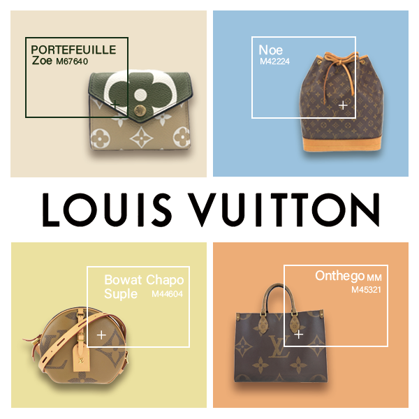

ルイヴィトン商品バナー -part2-
制作時期：2024年1月
制作時間：5時間
使用ツール：Illustrator・Photoshop
中古のブランド品をECサイト上で取り扱う店舗に従事していた頃、ECサイト掲載用に制作したバナーの別案
です。
人気商品を一つずつピックアップして見せることで、それぞれの商品を狙ったより多くのユーザーがページを
訪れてくれることを期待し、作成しました。
それぞれの商品の背景色は、ポップすぎて高級感が損なわれないよう落ち着いたくすみカラーで統一しました。